🏘️ 永恒谷居所？
Dwellings of Eldervale · 设计：Luke Laurie · Breaking Games 出版 · 1–5 人 · 官方英文规则书全文翻译（24 页 · AI 辅助机翻）
本页收录《永恒谷居所？》（Dwellings of Eldervale, 2020）的原版官方规则书全部 24 页（底本：Breaking Games 官方（Dropbox 托管），DoERulebook2024.pdf?rlkey=f7azahtr26gk87cd9doqea1ny&st=c3a2mj82&dl=1），逐页随图排列，点击任意图片即可放大查看；每页下方默认折叠了该页的 AI 辅助中文机翻对照，需要时可展开。规则内容归 Breaking Games 及版权方所有，收录仅供个人学习查阅。
整理说明：机翻对照按本站术语口径对齐（牌库/手牌/回合/轮/板块/指示物等），PDF 图文混排页的语序可能与原书视觉顺序略有出入；规则细节请一律以页面上方原书页面为准。
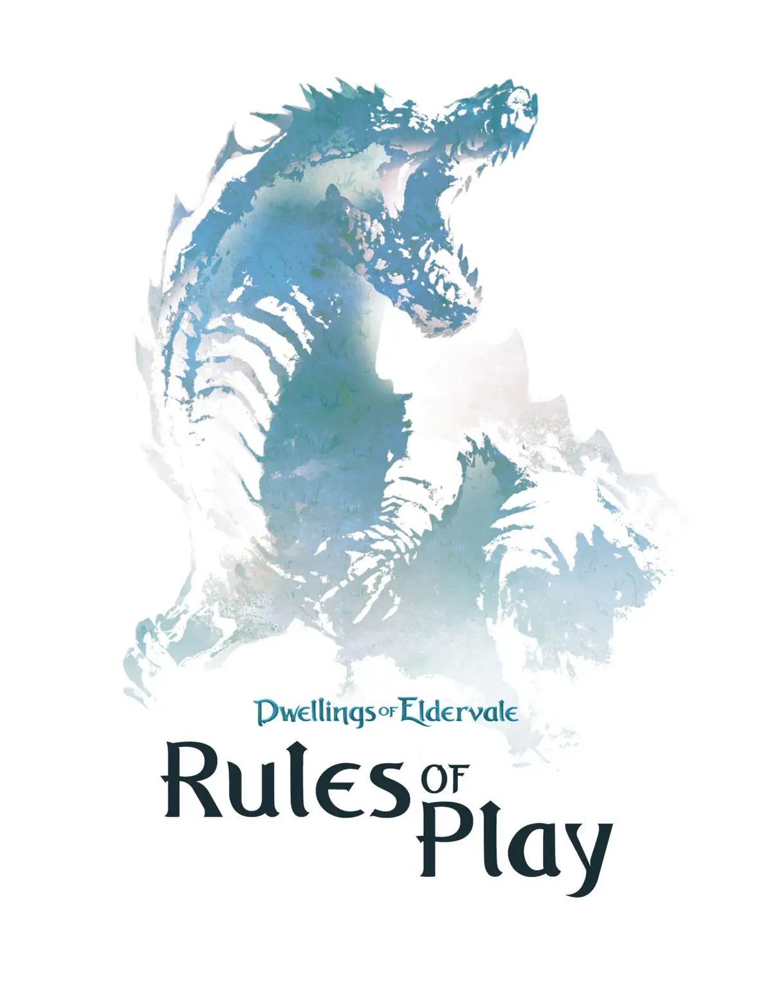
📝 第 1 页 AI 机翻对照（点击展开）
Dwellings of Eldervale
规则
游戏玩法
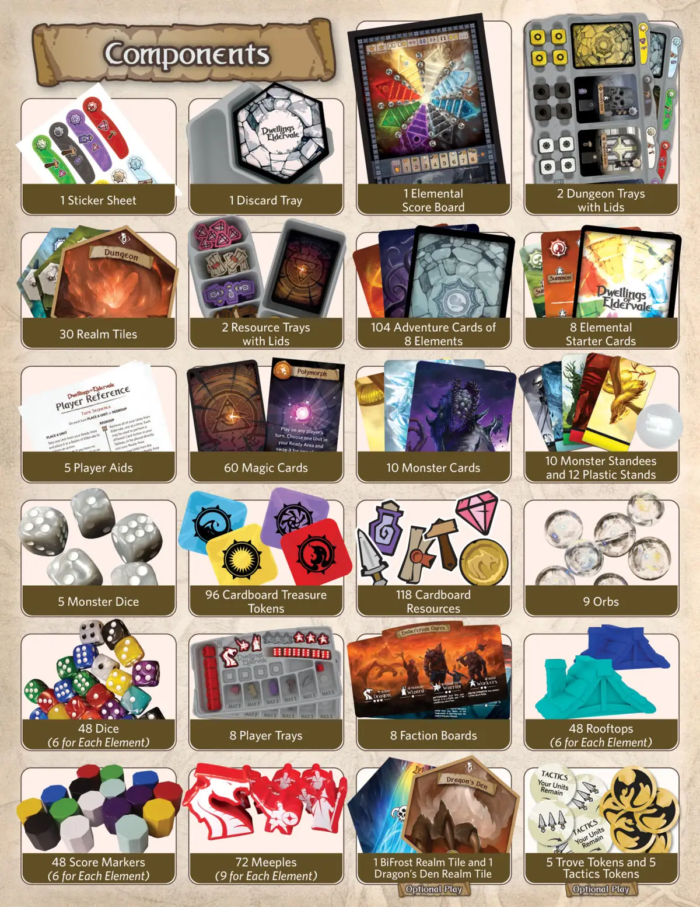
📝 第 2 页 AI 机翻对照（点击展开）
组件
Dwellings of Eldervale
1个元素 2个地牢托盘 1张贴纸 1个弃牌托盘
带盖的记分板 召唤住所
Sur of Eldervale
2个资源托盘 104张冒险卡 8个元素 30个领域板块
带盖 8个元素 起始卡牌
Polymorph
Dwellings of Eldervale
玩家参考
回合顺序
重组 在任何玩家的
放置单位 准备区域 回合中进行。选择你准备区域中的一个单位
将其替换为
10个怪物立牌 5个玩家辅助卡 60张魔法卡 10张怪物卡
和12个塑料支架
96个卡牌宝藏 118个卡牌 5个怪物骰子 90个
资源标记 资源
Embercr Ogre
Warrior 工人
MAXS MAXS Dragon Wizard
MAXS MAXS MAXS MAXS
MAXS MAXS MAXS MAXS
48个骰子 48个屋顶 8个玩家托盘
8个派系板块 (每个元素6个) (每个元素6个)
龙穴 你的单位
保持
战术 你的单位
保持
48个记分标记 72个米宝 5个宝藏标记和5个 1个比弗洛斯特领域板块和1个
(每个元素6个) (每个元素9个) 龙穴领域板块 战术标记
可选玩法 可选玩法
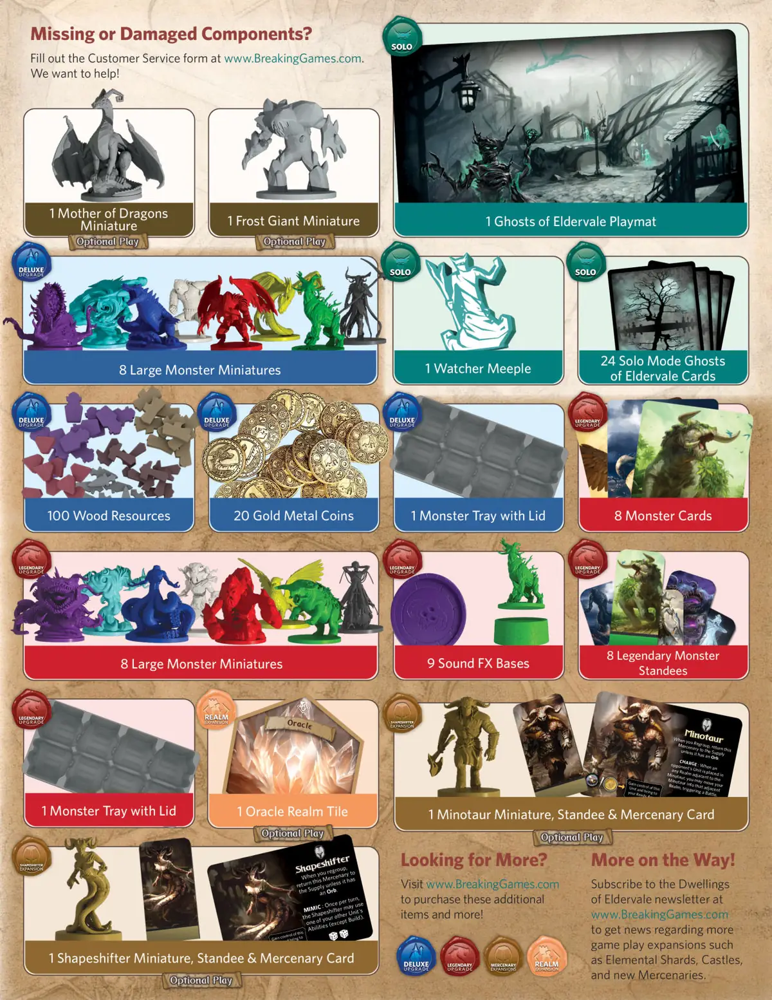
📝 第 3 页 AI 机翻对照（点击展开）
组件缺失或损坏？
单人模式
请访问 www.BreakingGames.com 填写客户服务表单。
我们很乐意提供帮助！
1个龙之母
1个冰霜巨人模型 1个艾尔德瓦尔的幽灵游戏垫 模型
可选玩法 可选玩法
豪华升级 单人模式 单人模式
24个单人模式幽灵
8个大型怪物模型 1个守望者米宝 艾尔德瓦尔的卡牌
豪华 豪华 豪华 传奇 等级
100个木质资源 20个金色金属硬币 1个带盖的怪物托盘 8张怪物卡
传奇
8个传奇怪物 8个大型怪物模型 9个音效底座
立牌
传奇 领域 神谕
扩展 米诺陶
当 人
牛
冲锋：当
1个带盖的怪物托盘 1个神谕领域板块 1个米诺陶模型、立牌&雇佣兵卡
可选玩法 可选玩法
寻找更多？ 更多即将推出！
变形者
当你重组时， 请访问 www.BreakingGames.com 订阅艾尔德瓦尔住所
除非该雇佣兵有 购买这些额外的 的新闻通讯在
一个宝珠。 物品和更多！ www.BreakingGames.com 获取有关更多
游戏扩展的资讯
模仿：每回合一次， 例如碎片城堡、
变形者可以使用 新雇佣兵。
你另一个单位的能力
(建造除外)。
1个变形者模型、立牌&雇佣兵卡
豪华 传奇 领域 等级 雇佣兵
可选玩法
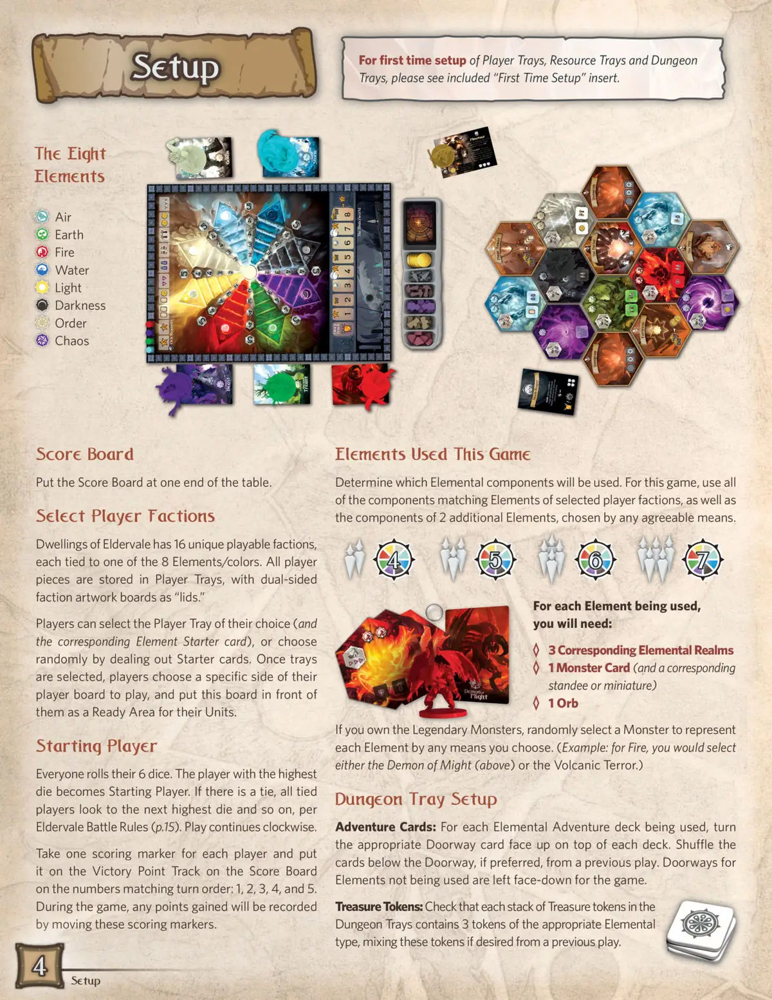
📝 第 4 页 AI 机翻对照（点击展开）
设置 对于玩家托盘、资源托盘和地下城托盘的首次设置，请参阅随附的"首次设置"插页。
八大元素
C 空气 5 大地 7
6 火焰
水 4
光明 3
黑暗 2 00
秩序 S
混沌 S
记分板 本局游戏使用的元素
将记分板放在桌子的一端。确定将使用哪些元素组件。在本局游戏中，使用与所选玩家派系相匹配的所有组件，以及另外2个元素的组件，通过任何双方同意的方式选择。
选择玩家派系 《长者谷的居所》(Dwellings of Eldervale)有16个独特的可玩派系，
每个派系都与8个元素/颜色之一相关联。所有玩家棋子都存储在玩家托盘中，
带有双面派系艺术图板作为"盖子"。对于每个使用的元素，
玩家可以选择他们想要的玩家托盘（以及相应的元素起始卡），
或者通过分发起始卡随机选择3个。一旦托盘
被选定，玩家选择他们玩家棋盘的特定面进行游戏，
并将此棋盘放在他们面前作为他们单位的"准备区"。
如果你拥有《传奇怪物》(Legendary Monsters)，通过任何你选择的方式随机选择一个怪物来代表
起始玩家 每个元素。（示例：对于火焰元素，你会选择
either the Demon of Might（上图）或 the Volcanic Terror。）所有人掷6个骰子。
点数最高的骰子玩家成为起始玩家。如果有平局，所有平局
玩家根据长者谷战斗规则(p.15)查看下一个最高点数骰子，依此类推。游戏继续顺时针进行。
地下城托盘设置
冒险卡：对于每个使用的元素冒险牌组，将相应的门牌翻开放在每个牌组顶部。如果愿意，
可以从之前的游戏中洗牌门牌下方的牌。未使用元素的门牌
在游戏中保持面朝下。
在游戏过程中，任何获得的分数将通过移动这些记分标记来记录。
在记分板上与回合顺序相对应的数字上放置每个玩家的一个记分标记：1、2、3、4和5
宝藏指示物：检查地下城托盘中每个宝藏指示物堆，
确保每个堆包含3个适当类型的元素指示物，
如果需要，可以从之前的游戏中混合这些指示物。
设置
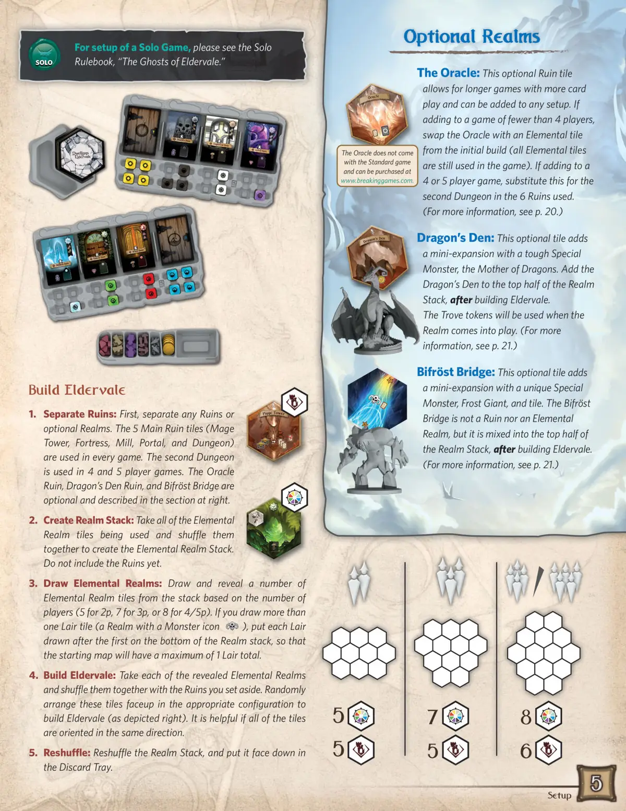
📝 第 5 页 AI 机翻对照（点击展开）
可选领域
对于单人游戏的设置，请参阅单人规则书"伊尔德瓦尔的幽灵"。
单人模式
神谕：这个可选的废墟板块允许进行更长时间的游戏，拥有更多的卡牌玩法，可以添加到任何设置中。如果添加到少于4玩家的游戏中，将神谕与一个元素板块交换。神谕不来自初始构建（标准游戏中的所有元素板块仍会在游戏中使用）。如果添加到4人或5人游戏中，用这个替换6个废墟中使用的第二个地牢。（更多信息，请见第20页。）
龙穴：这个可选板块增加了一个小型扩展，包含一个强大的特殊怪物——龙之母。将龙穴添加到领域牌堆的上半部分，在构建伊尔德瓦尔之后。当该领域进入游戏时，战利品指示物将被使用。（更多信息，请见第21页。）
彩虹桥：这个可选板块增加了一个小型扩展，包含一个独特的特殊怪物——霜巨人，和一个板块。彩虹桥不是废墟也不是元素领域，但它被混合到领域牌堆的上半部分，在构建伊尔德瓦尔之后。（更多信息，请见第21页。）
构建伊尔德瓦尔
- 分离废墟：首先，分离任何废墟或可选领域。5个主要废墟板块（法师塔、堡垒、磨坊、传送门和地牢）在每局游戏中都会使用。第二个地牢在4人和5人游戏中使用。神谕废墟、龙穴废墟和彩虹桥是可选的，并在右侧部分描述。
- 创建领域牌堆：取所有使用的元素领域板块并将它们洗混在一起，创建元素领域牌堆。暂时不要包括废墟。
- 抽取元素领域：根据玩家数量从牌堆中抽取并揭示一定数量的元素领域板块（2人游戏抽5张，3人游戏抽7张，4人或5人游戏抽8张）。如果你抽到多个巢穴板块（带有怪物图标的领域），将第一个之后抽到的每个巢穴板块放到领域牌堆的底部，这样起始地图最多只有1个巢穴。
- 构建伊尔德瓦尔：取每个揭示的元素领域板块，与你之前分离的废墟板块一起洗混。随机将这些板块正面朝上以适当的排列方式构建伊尔德瓦尔（如图所示）。如果所有板块都朝向同一个方向，会很有帮助。
- 重新洗牌：重新洗混领域牌堆，并将其面朝下放在弃牌托盘中。
设置
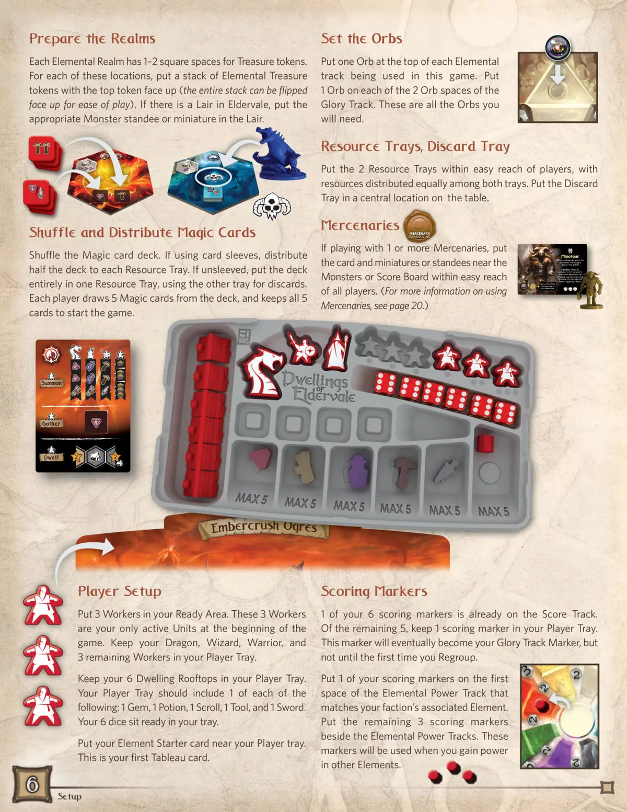
📝 第 6 页 AI 机翻对照（点击展开）
准备领域 设置宝珠
每个元素领域有1-2个用于放置宝藏指示物的方形区域。在每个元素领域的顶部放置1个宝珠。对于这些位置中的每一个，放置一叠元素宝藏指示物，顶牌面朝上（为便于游戏，整叠牌都可以面朝上放置）。如果Eldervale中有巢穴，将相应的怪物立牌或小模型放在巢穴中。这些就是你所需要的所有宝珠。
资源托盘、弃牌托盘
将2个资源托盘放在玩家容易触及的位置，资源平均分配在两个托盘中。将弃牌托盘放在桌子中央位置。
雇佣兵
洗牌并分发魔法卡
如果使用1个或更多雇佣兵，将卡牌和小模型或立牌放在怪物或记分板附近，所有玩家都能轻易拿到。（关于使用雇佣兵的更多信息，请参见第20页）
洗混魔法卡牌组。如果使用卡牌套膜，将卡牌组的一半分到每个资源托盘中。如果没有使用套膜，将整副卡牌放在一个资源托盘中，另一个托盘用于弃牌。
每位玩家从牌库中抽取5张魔法卡，并保留全部5张卡牌作为游戏起始手牌。
居所
召唤Eldervale
聚集
居住
玩家设置
记分标记
你的6个记分标记中已有1个在记分轨道上。剩下的5个中，保留1个在你的玩家托盘中。这个标记最终会成为你的荣耀轨道标记，但要在你第一次重组之后。
将3个工人放在你的准备区。这3个工人在游戏开始时是你唯一的活跃单位。将你的龙、法师、战士和剩下的3个工人放在你的玩家托盘中。
将你的6个居所屋顶放在你的玩家托盘中。
你的玩家托盘应包括以下各1个：1个宝石、1个药水、1个卷轴、1个工具和1个宝剑。
你的6个骰子放在托盘中准备使用。
将你的元素起始卡放在你的玩家托盘附近。这是你的第一张布局卡。
将剩下的3个记分标记放在元素力量轨道旁边。当你获得其他元素的力量时，这些标记将被使用。
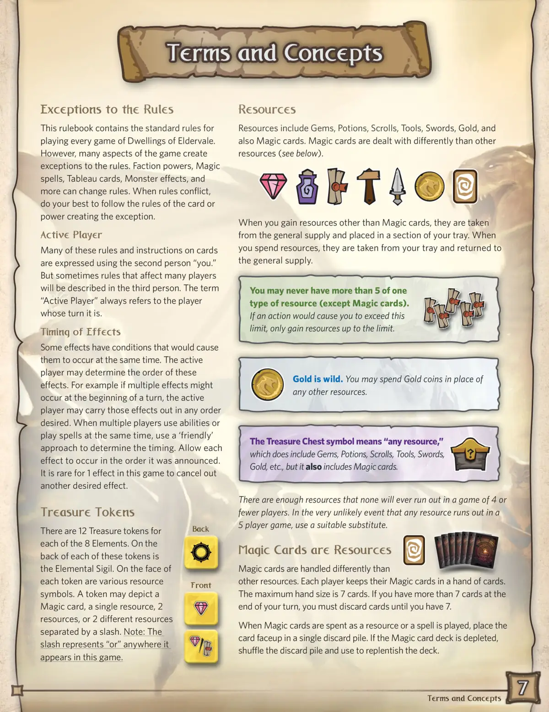
📝 第 7 页 AI 机翻对照（点击展开）
术语与概念
规则例外 资源
本规则书包含了玩《Eldervale居所》(Dwellings of Eldervale) 资源包括宝石(Gems)、药水(Potions)、卷轴(Scrolls)、工具(Tools)、剑(Swords)、金币(Gold)，
每局游戏的标准规则。 以及魔法卡牌(Magic cards)。魔法卡牌的处理方式与其他
然而，游戏的许多方面会创造 资源不同(见下文)。
规则的例外。派系能力(Faction powers)、
魔法法术(Magic spells)、牌组卡(Tableau cards)、 TA
怪物效果(Monster effects)等都可以改变规则。
当规则冲突时，尽可能遵循创造该例外的 当你获得除魔法卡牌外的资源时，它们从
卡牌或能力的规则。 通用资源库中取出，并放置在你的托盘的一个区域内。
当你花费资源时，它们从你的托盘中取出，
活跃玩家 并返回到通用资源库中。
许多规则和卡牌上的说明使用第二人称"你"。 你每种类型的资源永远不能超过5个(魔法卡牌除外)。
但有时影响多个玩家的规则会用第三人称描述。 如果某个行动会使你超过这个限制，只能获得
"活跃玩家"(Active Player)一词始终指 最多达到限制数量的资源。
轮到行动的玩家。 效果时机
有些效果有条件会导致它们同时发生。 有些效果有条件会导致它们同时发生。活跃玩家可以决定这些效果的顺序。例如，如果多个效果可能在回合开始时发生，活跃玩家可以按任何期望的顺序执行这些效果。当多个玩家同时使用能力或施放法术时，采用友好的方式来确定时机。让每个效果按宣布的顺序发生。在这个游戏中，一个效果取消另一个期望的效果的情况极为罕见。
每种元素(Elements)有12个宝藏指示物(Treasure tokens)。 黄金是万能资源。你可以花费金币来替代
这些指示物背面有元素符文(Elemental Sigil)。 任何其他资源。
每个指示物正面有各种资源符号。一个指示物可能 宝藏宝箱符号(Treasure Chest symbol)表示"任意资源"，包括宝石、药水、卷轴、工具、剑、金币等，也包括魔法卡牌。
描绘一张魔法卡牌、单个资源、2个资源，或2个不同的资源，中间用斜杠分隔。注意：在本游戏中，斜杠 wherever it appears in this game.
代表"或"。
在4人或更少玩家的游戏中，资源数量充足，永远不会耗尽。在5人游戏中，任何资源耗尽的可能性极小，如果发生，请使用合适的替代物。
魔法卡牌是资源
魔法卡牌的处理方式与其他资源不同。每位玩家将他们的魔法卡牌保持在一手牌中。最大手牌数为7张。如果你在回合结束时拥有超过7张牌，你必须弃牌直到你有7张。当魔法卡牌作为资源被花费或作为法术被施放时，将卡牌正面朝上放置在一个单独的弃牌堆中。如果魔法卡牌牌库耗尽，洗弃牌堆并用来补充牌库。
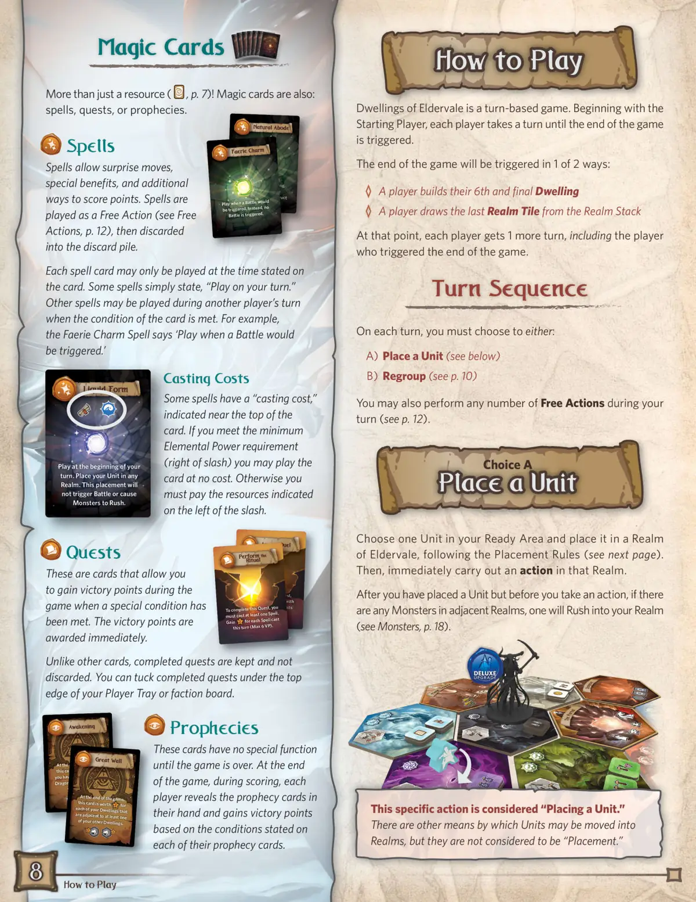
📝 第 8 页 AI 机翻对照（点击展开）
魔法卡牌 如何游玩
不仅仅是资源（见第7页）！魔法卡牌还是：
法术、任务或预言。Dwellings of Eldervale是一款回合制游戏。从起始玩家开始，每个玩家轮流行动，直到游戏结束被触发。自然居所
法术
妖精魅力
游戏结束将通过以下2种方式之一触发：法术允许出人意料的移动、特殊好处和额外的得分方式。当玩家建造其第6个也是最后一个居所时，法术作为免费行动游玩（见免费行动，第12页），然后被弃入弃牌堆。当玩家从领域牌堆中抽到最后一块领域板块时，游戏结束被触发。届时，每位玩家（包括触发游戏结束的玩家）将再获得一个回合。
每张法术卡牌只能在卡牌上注明的时间点游玩。有些法术仅说明"在你的回合游玩"。其他法术可能在另一玩家的回合游玩，当卡牌上的条件满足时。例如，妖精魅力法术说"当战斗将被触发时游玩"。
施法费用
有些法术有"施法费用"，显示在卡牌顶部附近。如果你满足最低元素能量需求（斜杠右侧），你可以免费游玩此卡牌。否则你必须支付斜杠左侧指示的资源。
任务
这些是卡牌，允许你在游戏过程中当特殊条件满足时获得胜利点数。胜利点数会立即授予。与其他卡牌不同，已完成的任务会被保留而不被弃置。你可以将已完成的任务塞入你的玩家托盘或派系板的顶部边缘。
预言
这些卡牌在游戏结束前没有特殊功能。游戏结束时，在计分阶段，每位玩家揭示他们手中的预言卡牌，并根据每张预言卡上所述的条件获得胜利点数。
如何游玩
在每回合开始时，你必须选择：
A) 放置一个单位（见下文）
B) 重整（见第10页）
在你的回合中，你也可以执行任意数量的免费行动（见第12页）。
选择A：在你的回合开始时，放置一个单位。将你的单位放置在Eldervale的任意一个领域，遵循放置规则（见下一页）。然后立即在该领域执行一个行动。
在你放置单位后但在你执行行动前，如果有怪物在相邻领域，将有一个怪物冲入你的领域（见怪物，第18页）。你必须在本回合至少施放一个法术。根据本回合施放的每个法术获得（最多6VP）。
这个特定动作被视为"放置一个单位"。
有其他方式可以将单位移动到领域，但它们不被视为"放置"。
豪华版
觉醒
长城
这张卡的价值取决于
这个行动被视为"放置一个单位"。
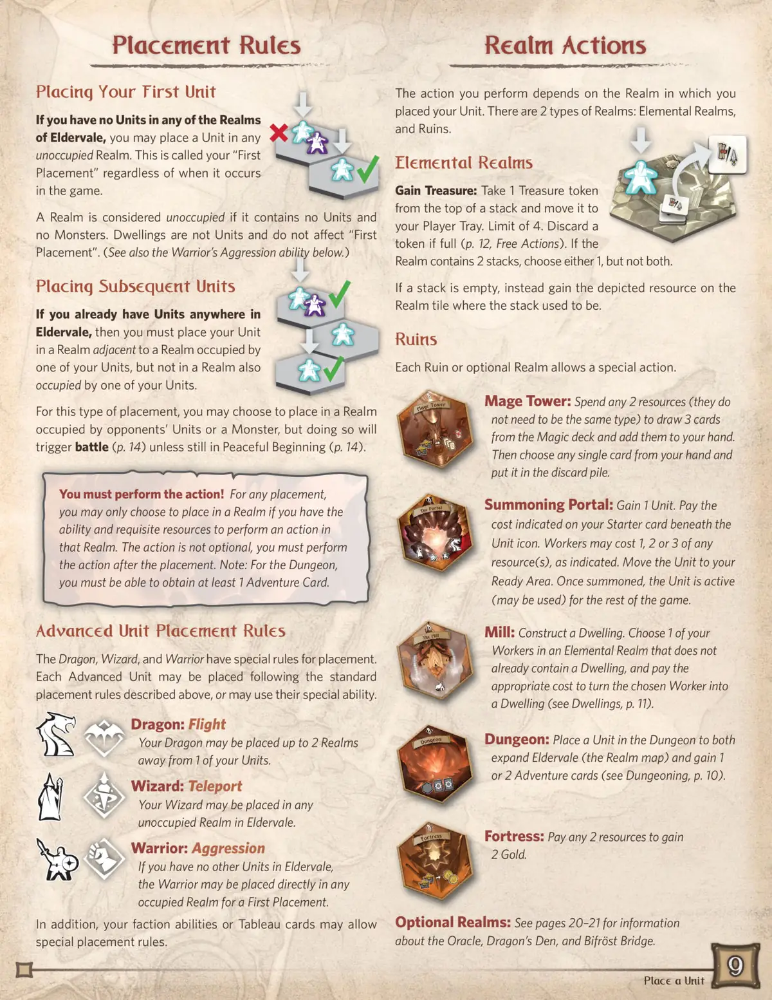
📝 第 9 页 AI 机翻对照（点击展开）
放置规则 领域行动
放置你的第一个单位 你执行的行动取决于你放置单位的领域。有2种类型的领域：元素领域，
如果你在艾尔德瓦莱（Eldervale）的任何领域都没有单位，和废墟（Ruins）。 你可以将一个单位放置在任何
并且没有怪物。住所不是单位，也不影响"首次 未被占据的领域。这被称为你的"首次放置"，
放置"。（另见下面的战士的侵略能力）。 无论它在游戏中的何时发生。
一个领域如果没有单位和 元素领域
怪物，则被视为未被占据。住所不影响"首次放置"。 获得宝藏：从一堆顶部拿取1个宝藏指示物
如果该领域有2堆，选择其中1堆，但不能两堆都选。 并将其移到你的玩家托盘中。限量为4。如果已满则弃置一个
指示物（第12页，自由行动）。如果 放置后续单位 领域堆叠为空，则改为获得该领域板块上 depicted的资源。
你已经在艾尔德瓦莱的任何领域有单位，那么你必须将你的单位 如果你已经在艾尔德瓦莱的任何领域有单位，那么你必须将你的单位
放置在与你的某个单位占据的领域相邻的领域，但不能放置在你的单位也 放置在与你的某个单位占据的领域相邻的领域，但不能放置在你的单位也
占据的领域。 占据的领域。
对于这种类型的放置，你可以选择将单位放置在对手单位或怪物占据的领域，但这样做会 废墟
引发战斗（第14页），除非仍处于和平开始阶段（第14页）。 每个废墟或可选领域允许一个特殊行动。
你必须执行行动！对于任何放置， 法师塔：花费任意2种资源（不必是相同类型）从魔法牌库抽3张牌
你只能选择在你能执行该领域行动的能力和所需资源的领域放置单位。 并加入你的手牌。然后从你的手牌中选择任意一张牌并将其放入弃牌堆。
行动不是可选的，你必须在放置后执行行动。注意：对于地牢， 召唤传送门：获得1个单位。支付你起始卡牌上单位图标下方的
你必须能够获得至少1张冒险卡。 成本。工人可能需要1、2或3种任意资源，如所示。将该单位移至你的
准备区。一旦召唤，该单位在本游戏余下时间内都是活跃的
（可使用）。
高级单位放置规则 磨坊：建造一个住所。选择1个你在元素领域的工人，
龙、法师和战士有特殊的放置规则。 该领域尚无住所，并支付适当的成本将所选工人变为
每个高级单位可以遵循上述标准 住所（见住所，第11页）。
放置规则放置，或可以使用他们的特殊能力。
龙：飞行 地牢：将一个单位放置在地牢中，既可以扩展艾尔德瓦莱（领域地图），
你的龙可以放置在距离你的单位最多2个领域的位置。 也可以获得1或2张冒险卡（见地牢探索，第10页）。
法师：传送 堡垒：支付任意2种资源获得2金币。
你的法师可以放置在艾尔德瓦莱中任何未被占据的领域。
战士：侵略 如果你没有其他单位在艾尔德瓦莱
战士可以直接放置在任何已占据的领域中进行首次放置。此外，你的派系能力或版图卡牌可能允许特殊放置规则：关于神谕、龙穴和彩虹桥的信息，请参见第20-21页。
放置一个单位
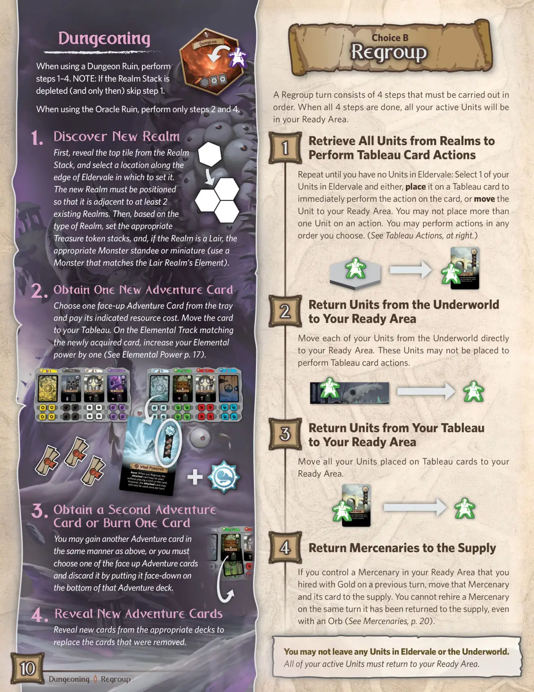
📝 第 10 页 AI 机翻对照（点击展开）
地下城 重组 B
地下城 重组
当使用地下城废墟时，执行步骤1-4。注意：如果领域牌库已耗尽（仅在此情况下），跳过步骤1。当使用神谕废墟时，仅执行步骤2和4。一个重组回合包括4个必须按顺序执行的步骤。当所有4个步骤完成后，你所有的活跃单位将位于你的准备区。
发现新领域
首先，从领域牌库顶揭示一块板块，并在艾尔代尔（Eldervale）的边缘选择一个位置来放置它。新领域必须放置成与至少2个现有领域相邻。然后，根据领域类型，设置相应的宝藏指示物牌堆，如果该领域是巢穴（Lair），则放置相应的怪物立牌或迷你模型（使用与巢穴领域元素相匹配的怪物）。
从领域回收所有单位
从艾尔代尔：选择你在艾尔代尔的一个单位，或者将其放置在一张版图卡上并立即执行卡牌上的行动，或者将该单位移动到你的准备区。你不能在一个行动上放置超过一个单位。你可以按任何顺序执行行动。（参见右侧的版图行动。）
从地下城回收所有单位到你的准备区
将你的每个单位从地下城直接移动到你的准备区。这些单位不能被放置来执行版图卡行动。
获取一张新的冒险卡
从托盘中选择一张面朝上的冒险卡，并支付其标示的资源成本。将这张卡移动到你的版图上。在与新获取的卡牌元素相匹配的元素轨道上，将你的元素力量提升一级。（参见元素力量，第17页。）
从你的版图回收单位到你的准备区
将你放置在版图卡上的所有单位移动到你的准备区。
获取第二张冒险卡或弃掉一张卡
你可以以上述相同方式再获取一张冒险卡，或者必须选择一张面朝上的冒险卡并将其弃掉，通过将其面朝下放到该冒险牌库的底部。
雇佣兵返回补给
如果你在你的准备区控制着一个你在前一回合用金币雇佣的雇佣兵，将该雇佣兵及其卡牌移动到补给区。你不能在雇佣兵返回补给区的同回合重新雇佣它，即使使用宝珠（参见雇佣兵，第20页）。
揭示新的冒险卡
从相应的牌库中揭示新卡来替换被移除的卡。
你不能在艾尔代尔或地下城留下任何单位。你所有的活跃单位必须返回你的准备区。
10
地下城 重组
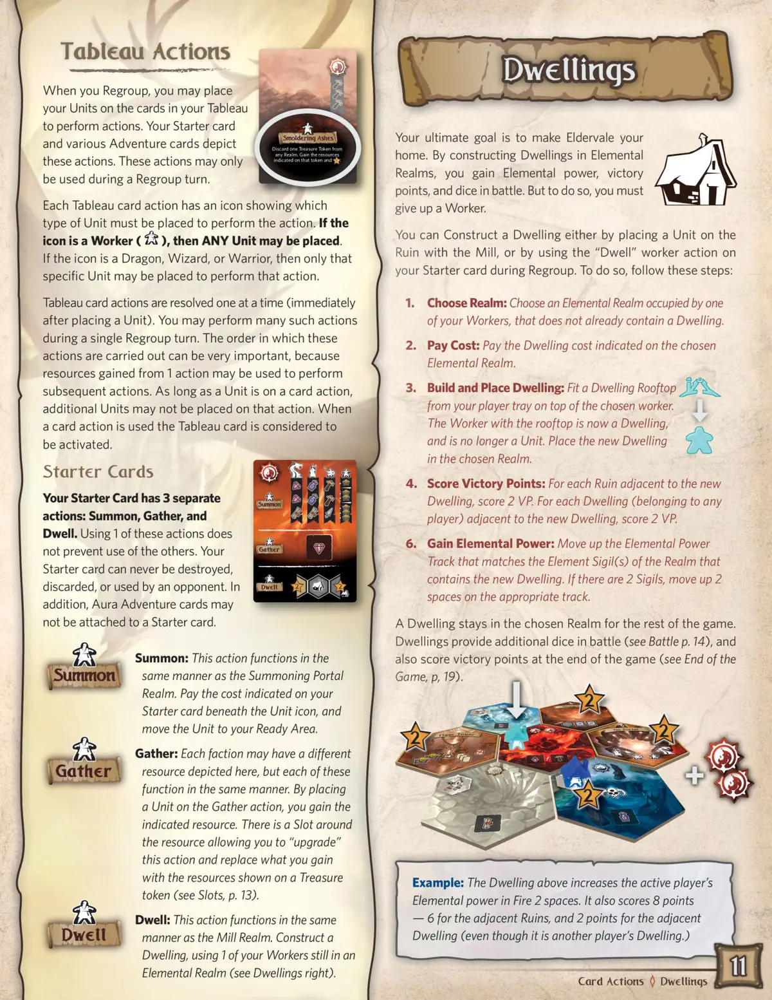
📝 第 11 页 AI 机翻对照（点击展开）
版图行动
居所
当你重新集结时，你可以将你的单位放置在你的版图卡牌上以执行行动。你的起始卡牌"余烬"(Smoldering Ashes)和各种冒险卡牌描绘了这些行动。这些行动只能在重新集结回合期间使用。
每张版图卡牌的行动都有一个图标，显示必须放置哪种类型的单位才能执行该行动。如果图标是工人(☩)，则任何单位都可以被放置。如果图标是龙、巫师或战士，则只有特定的单位才能被放置来执行该行动。
版图卡牌行动一次解决一个（放置单位后立即执行）。你可以在单个重新集结回合期间执行许多此类行动。这些行动的执行顺序可能非常重要，因为从一个行动获得的资源可用于执行后续行动。只要单位在卡牌行动上，就不能在该行动上放置额外的单位。当卡牌行动被使用时，版图卡牌被视为已激活。
起始卡牌
你的起始卡牌有3个独立行动：召唤、收集和居住。使用其中一种行动并不会妨碍其他行动的使用。你的起始卡牌永远不会被摧毁、弃置或被对手使用。此外，光环冒险卡牌不能附加到起始卡牌上。
召唤：此行动以与召唤传送门(Summoning Portal)领域相同的方式运作。支付你起始卡牌上单位图标下方的成本，并将该单位移动到你的准备区域。
收集：每个派系可能有不同的
收集
收集此处 depicted 的资源，但这些 十 功能以相同的方式运作。通过在收集行动上放置一个单位，你获得所示资源。资源周围有一个槽位，允许你"升级"此行动，并用宝藏指示物(见槽位，第13页)上所示的资源替换你获得的内容。示例：上面的住所将活跃玩家的元素力量增加2个火空间。它还获得8分——相邻废墟的6分，以及相邻住所的2分(即使它是另一个玩家的住所。)
居住
此行动以与领域相同的方式运作。建造一个住所，使用你仍然在元素领域中的1个工人(见右侧的住所)。
卡牌行动
住所
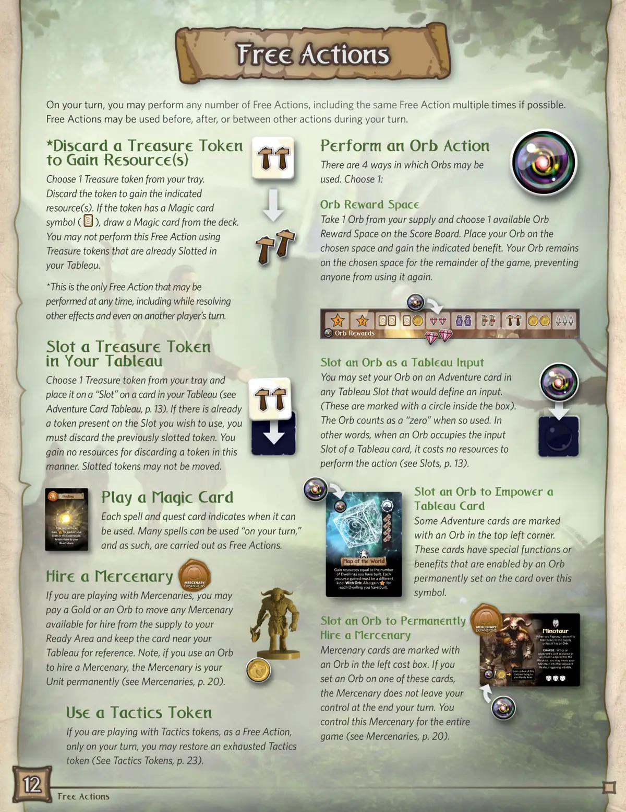
📝 第 12 页 AI 机翻对照（点击展开）
免费行动
在你的回合中，你可以执行任意数量的免费行动，如果可能的话，包括多次执行相同的免费行动。
免费行动可以在你的回合中，在其他行动之前、之后或之间使用。
- 弃置一个宝藏指示物 执行一个星球行动
以获得资源 有4种方式可以使用星球。
从你的托盘中选择1个宝藏指示物。 选择1：
弃置该指示物以获得所指示的资源。如果该指示物有 星球奖励空间
魔法卡牌符号( )，则从牌库中抽取一张魔法卡。 从你的供应中取出1个星球，并在记分板上选择1个可用的星球
奖励空间。将你的星球放置在所选空间上并获得所指示的收益。你的星球将 你不能使用已经放入
留在所选空间上，直到游戏结束，防止任何人再次使用它。 你的版图中的T
这是唯一可以在任何时候执行的免费行动，包括在解决 宝藏指示物来执行此
其他效果时，甚至在其他玩家的回合中。 免费行动。
星球奖励
将一个宝藏指示物
放入你的版图 将一个星球作为版图输入
从你的托盘中选择1个宝藏指示物，并将其 你可以将你的星球放在冒险卡上的任何
放置在你版图中卡牌上的"槽位"上（见 定义为输入的版图槽位中。
冒险卡版图，第13页）。如果你希望使用的 （这些槽位在方框内有一个圆圈标记）
槽位上已经有指示物，你必须弃置先前放入的指示物。当星球占据版图卡片的输入槽位时，它算作"零"。换句话说，当你执行该行动时，不需要花费资源（见槽位，第13页）。
将一个星球放入以增强 打一张魔法卡
版图卡
每个法术和任务卡都标明了它可以在 一些冒险卡在左上角
何时使用。许多法术可以在"你的回合中"使用， 标有星球。
因此，它们作为免费行动执行。 这些卡片具有特殊功能或
世界地图 通过永久放置在卡片上的星球
雇佣一名雇佣兵 符号来启用的特殊收益。
如果你正在使用雇佣兵，你可以支付金币或星球，将 如果你使用星球雇佣一名雇佣兵，则该雇佣兵
供应中任何可雇佣的雇佣兵移动到你的 是你的单位永久保留（见雇佣兵，第20页）。
预备区域，并将卡牌放在你的版图附近供参考。注意，如果你使用星球 雇佣兵卡牌标有
在左上角的成本框中放置星球，则雇佣兵不会在 一个星球。如果你
你的回合结束时离开你的控制。你 在这些卡牌上放置一个星球，
在整个游戏过程中都控制着这名雇佣兵（见雇佣兵，第20页）。 雇佣兵不会离开你的控制。
你控制这名雇佣兵
整个游戏过程（见雇佣兵，第20页）。
使用一个战术指示物
如果你正在使用战术指示物，作为免费行动， 仅在你的回合中，你可以恢复一个已耗尽的战术
你可以恢复一个已耗尽的战术指示物（见战术指示物，第23页）。
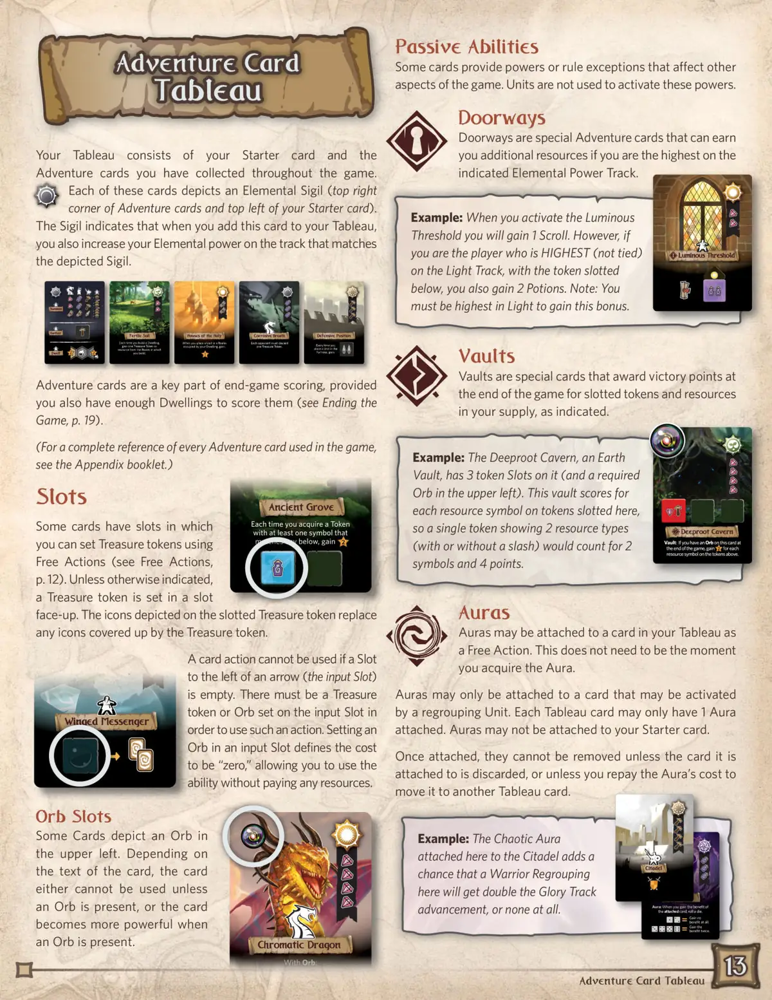
📝 第 13 页 AI 机翻对照（点击展开）
被动能力
冒险卡牌
一些卡牌提供影响游戏其他方面的能力或规则例外。单位不用于激活这些能力。
门径
门径是特殊的冒险卡牌，如果你在游戏过程中收集的冒险卡牌上指示的元素能量轨道上处于最高位置，你可以获得额外资源。每张卡牌都描绘着一个元素印记（在冒险卡牌的右上角和起始卡牌的左上角）。
示例：当你激活发光阈值时，你将获得1卷轴。但是，如果你在发光阈值对应的元素能量轨道上也是最高的（没有并列），并且你的标记位于轨道下方，你还将获得2药水。注意：你必须是在光明轨道上最高才能获得此奖励。
宝库
宝库是特殊的卡牌，在游戏结束时为放入槽位中的标记和资源提供胜利点，前提是你也有足够的居所来计分（参见游戏结束，第19页）。
（关于游戏中使用的每张冒险卡牌的完整参考，请参见附录手册。）
示例：深根洞穴，一张土元素宝库，有3个标记槽位（左上角需要一个轨道球）。这个宝库根据放入槽位中的每个资源符号计分，因此下面显示的带有至少一个符号（带斜杠或不带斜杠）的标记将计为2个符号和4分。
一些卡牌有槽位，你可以使用自由行动（参见自由行动，第12页）将宝藏标记放入其中。除非另有说明，宝藏标记是正面朝上放入槽位的。放入槽位的宝藏标记上的图标会覆盖任何被宝藏标记遮挡的图标。
如果箭头左侧的槽位（输入槽位）为空，则不能使用卡牌行动。输入槽位上必须有一个宝藏标记或轨道球，才能使用此类行动。将轨道球放入输入槽位定义了能力成本为"零"，使你可以不消耗任何资源来使用该能力。
轨道槽位
一些卡牌在左上角显示一个轨道球。根据卡牌文本，该卡牌可能无法使用，除非在输入槽位上放置了一个轨道球。将轨道球放入输入槽位定义了能力成本为"零"，使你可以不消耗任何资源来使用该能力。
光环
光环可以作为自由行动附加到你陈列区的一张卡牌上。这不一定是获得光环的那一刻。光环只能附加到可以被重组单位激活的卡牌上。每张陈列区卡牌只能附加1个光环。光环不能附加到你的起始卡牌上。一旦附加，它们不能被移除，除非它们所附着的卡牌被弃置，或者你支付光环的成本将其移动到另一张陈列区卡牌上。
示例：混乱光环附加到城堡上，为在此重组的战士增加了一次在荣耀轨道上获得双倍分数的机会。
存在一个星球，或卡牌"进阶"，或完全没有。
当存在一个星球时变得更强大 =
存在一个星球。 彩色龙
冒险卡牌陈列
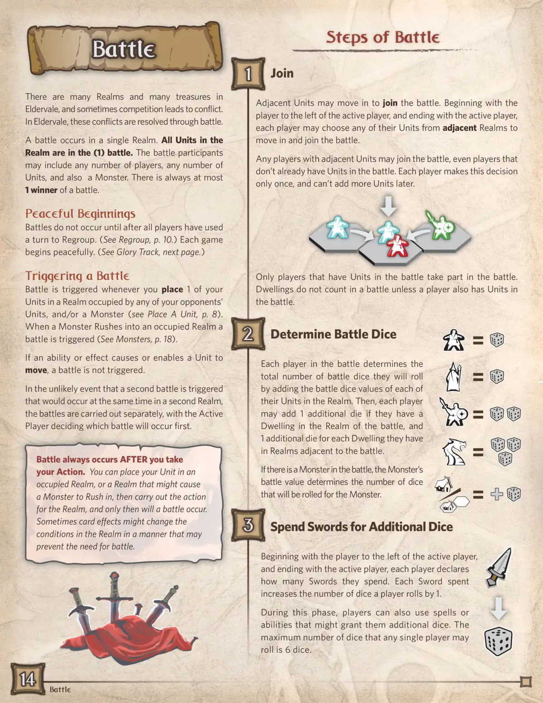
📝 第 14 页 AI 机翻对照（点击展开）
战斗步骤
战斗
加入
在埃尔德谷有许多领域和许多宝藏，相邻的单位可以移动加入战斗。从活跃玩家左侧的玩家开始，到活跃玩家结束，每位玩家可以选择他们来自相邻领域的任何单位移动并加入战斗。
任何拥有相邻单位的玩家都可以加入战斗，即使那些玩家在战斗中还没有单位。每位玩家只做一次此决定，之后不能添加更多单位。
战斗发生在单个领域。该领域中的所有单位都参与(1)战斗。战斗参与者包括玩家单位，以及一个怪物。战斗总是最多有1个胜者。
和平开端
在所有玩家都使用了一个回合来重组(见重组，第10页)之前，不会发生战斗。每局游戏都以和平开始。(见荣耀轨道，下一页。)
触发战斗
当你将1个单位放置在任何对手单位占据的领域，和/或一个怪物(见放置单位，第8页)占据的领域时，就会触发战斗。
当怪物冲入一个被占据的领域时，会触发战斗(见怪物，第18页)。
如果一个能力或效果导致或使一个单位移动，则不会触发战斗。
在不太可能的情况下，如果在第二个领域同时触发第二次战斗，则战斗分别进行，由活跃玩家决定先进行哪场战斗。
战斗总是在你执行完行动后发生。你可以将你的单位放置在被占据的领域，或可能导致怪物冲入的领域，然后执行该领域的行动，只有在这之后才会发生战斗。
有时，卡牌效果可能会改变领域中的条件，从而可能避免战斗的需要。
确定战斗骰子
战斗中的每位玩家通过将他们在该领域中的每个单位的战斗骰子值相加，来确定他们将投掷的战斗骰子总数。然后，如果玩家在战斗领域拥有一处住所，每位玩家可以额外增加1个骰子，并且在战斗相邻领域每拥有一处住所，再额外增加1个骰子。
如果战斗中有怪物，怪物的战斗值决定了将为怪物投掷的骰子数量。
花费剑获取额外骰子
从活跃玩家左侧的玩家开始，到活跃玩家结束，每位玩家宣布他们花费多少剑。每花费1把剑，玩家投掷的骰子数量就增加1。
在此阶段，玩家还可以使用可能给予他们额外骰子的法术或能力。任何单个玩家可以投掷的最大骰子数量是6个骰子。
战斗
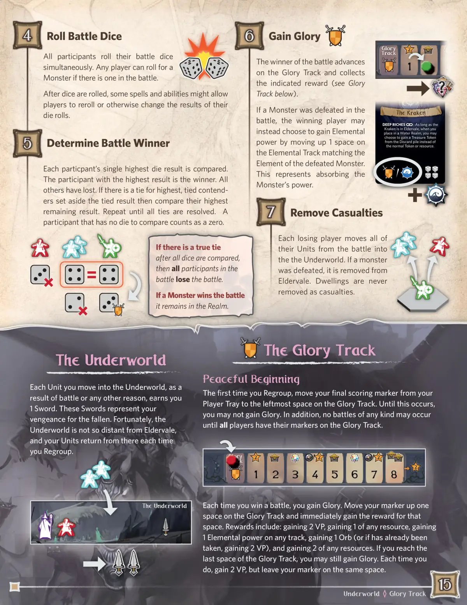
📝 第 15 页 AI 机翻对照（点击展开）
4 掷战斗骰子 获得荣耀
荣耀
所有参与者同时掷出他们的战斗骰子。战斗的赢家在荣耀轨道上前进，并收集战斗中如果有怪物的话的 indicated 奖励（参见下面的荣耀轨道）。骰子掷出后，某些法术和能力可能允许玩家重新掷骰子或以其他方式改变他们骰子的结果。
确定战斗赢家
比较每位参与者的单个最高骰子结果。这代表吸收了怪物的力量。结果最高的参与者是赢家。其他人都输了。如果有最高平局，平局者将平局结果放在一边，然后比较他们剩下的最高结果。重复直到所有平局解决完毕。没有骰子可比较的参与者计为零。
如果所有骰子比较后仍有真正的平局，那么战斗中的所有参与者都输了。
移除伤亡
每位输家将他们所有的单位从战斗中移入冥界。如果怪物被击败，它将从艾尔德维尔被移除。住所永远不会被移除为伤亡。
如果怪物赢了战斗，它仍然留在该领域。
荣耀轨道
每次你重组时，将你的最终计分标记从你的玩家托盘移动到荣耀轨道的最左侧空间。直到这种情况发生前，你不能获得荣耀。此外，在所有玩家都将标记放在荣耀轨道上之前，任何类型的战斗都不能发生。
每次你赢得一场战斗，你都会获得荣耀。将你的标记在荣耀轨道上前进一个空间，并立即获得该空间的奖励。奖励包括：获得2P，获得任意1种资源，在任何轨道上获得1点元素力量，获得1个球体（如果已被获得，则获得2VP），以及获得任意2种资源。如果你到达荣耀轨道的最后一个空间，你仍然可以获得荣耀。每次这样做时，获得2P，但将你的标记留在同一个空间。
冥界
每次你将单位移入冥界，无论是战斗或其他原因的结果，都会为你赚取1把剑。这些剑代表了你对逝者的复仇。幸运的是，冥界离艾尔德维尔并不遥远，你的单位每次重组时都会从那里返回。
冥界荣耀轨道
2 3 4 5 6 7 8
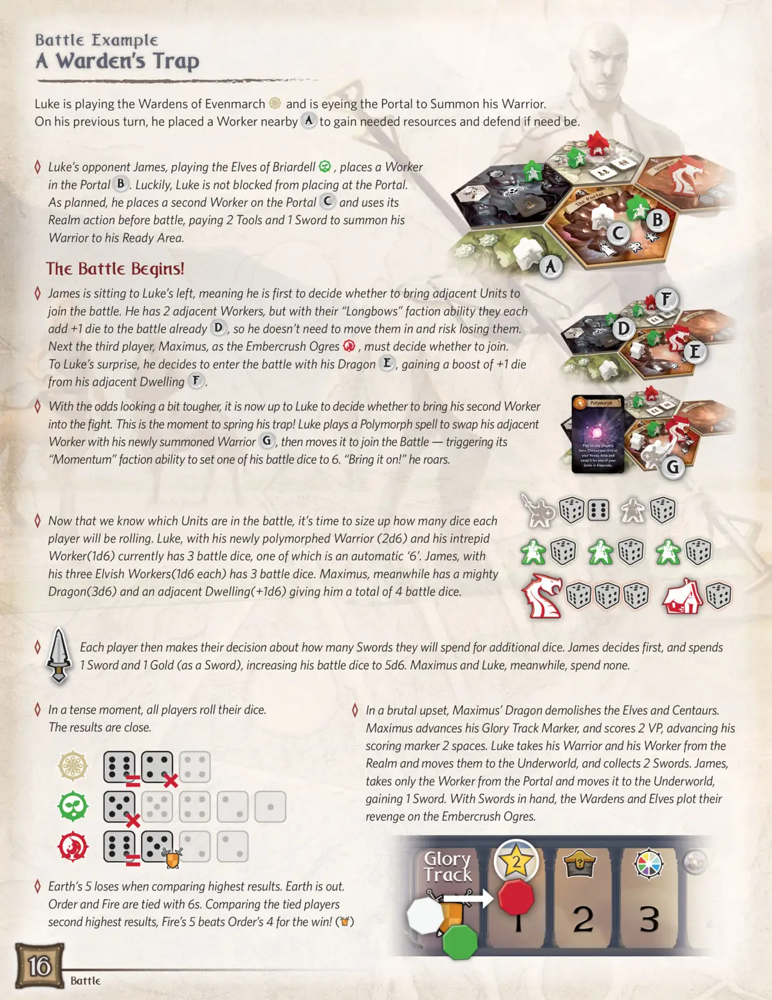
📝 第 16 页 AI 机翻对照（点击展开）
战斗示例
守卫者的陷阱
卢克正在玩《守卫者》(The Wardens of Evenmarch)，并正盯着召唤他战士的传送门。
在他的上一个回合，他在传送门A附近放置了一个工人，以获取所需的资源并在必要时进行防御。
卢克的对手詹姆斯，正在玩《布里德尔精灵》(Elves of Briardell)，在传送门B放置了一个工人。幸运的是，卢克没有被阻挡，可以在传送门上放置工人。
按计划，他在传送门上放置了第二个工人，并在战斗前使用其领域行动，支付2个工具和1把剑，将他刚召唤的战士B放到他的准备区C。
P
战斗开始！
詹姆斯坐在卢克的左边，这意味着他首先决定是否将相邻的单位带入战斗。他有2个相邻的工人，但由于他们长弓的派系能力，他们各自已经为战斗增加了+1个骰子D，所以他不需要将他们移动进来并冒着失去他们的风险。D
接下来是第三个玩家马克西姆斯，作为余烬巨魔(Embercrush Ogres)，必须决定是否加入。令卢克惊讶的是，他决定用他的龙E进入战斗，从他相邻的住所获得+1个骰子的加成。
随着局势看起来有点棘手，现在轮到卢克决定是否将他的第二个工人带入战斗。这正是触发他陷阱的时刻！卢克使用了一个变形术法术，将他相邻的工人与他新召唤的战士G交换，然后将其移动加入战斗——触发了他的"动量"(Momentum)派系能力，将他的一个战斗骰子设为6。"放马过来！"他咆哮道。
G
O 现在我们知道了哪些单位在战斗中，是时候计算每个玩家将掷多少个骰子了。卢克，通过他变形后的战士(2d6)和他勇敢的工人(1d6)，目前有3个战斗骰子，其中一个是自动6。詹姆斯，凭借他的三个精灵工人(每个1d6)，有3个战斗骰子。与此同时，马克西姆斯有一头强大的龙(3d6)和一个相邻的住所(+1d6)，总共4个战斗骰子。
然后每个玩家决定他们将花费多少把剑来获得额外的骰子。詹姆斯先决定，花费1把剑和1个金币(作为一把剑)，将他的战斗骰子增加到5d6。与此同时，马克西姆斯和卢克没有花费任何东西。
在紧张的时刻，所有玩家掷骰子。在一场残酷的逆转中，马克西姆斯的龙摧毁了精灵和半人马。
结果很接近。马克西姆斯前进他的荣耀轨道标记器，并获得2VP，前进他的计分标记器2个空间。卢克将他的战士和工人从领域移到地下世界，并收集2把剑。詹姆斯只将传送门上的工人移到地下世界，获得1把剑。手持剑的守卫和精灵们策划着对余烬巨魔的复仇。
荣耀
轨道
在比较最高结果时，地球(5)输了。地球出局。
秩序和火都以6平局。比较平局玩家的次高结果，火的5击败了秩序的4，获得胜利！（）
战斗
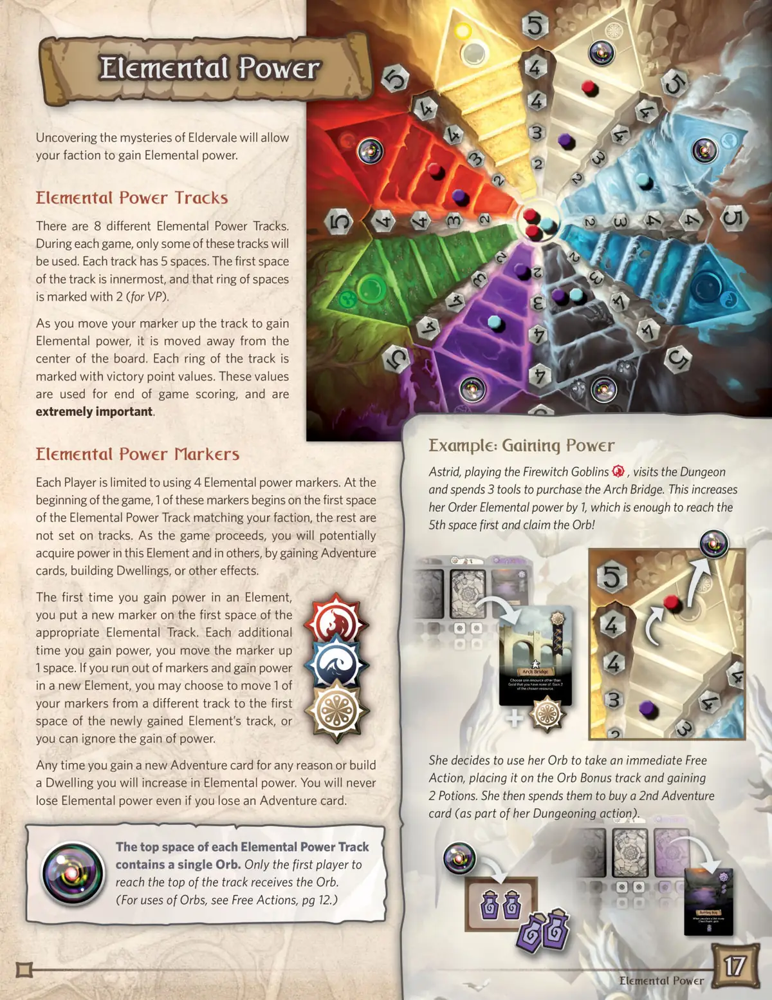
📝 第 17 页 AI 机翻对照（点击展开）
元素之力 4
3 揭示艾尔达谷(Eldervale)的奥秘将使你的派系获得元素之力。
元素之力轨道
有8种不同的元素之力轨道。在每局游戏中，只会使用其中一些轨道。每条轨道有5个空间。轨道的第一个空间是最内侧的，那一圈空间标记为2（用于VP）。
当你沿着轨道移动你的标记以获得元素之力时，标记会远离版图中心。轨道的每一圈都标记有胜利点数值。这些数值用于游戏结束计分，并且极其重要。
示例：获得力量 元素之力标记
阿斯特丽德(Astrid)，扮演火女巫哥布林(Firewitch Goblins)，访问了地牢(Dungeon)并花费3工具购买了拱桥(Arch Bridge)。这增加了她的秩序(Order)元素之力1点，足以让她首先到达第5个空间并夺取宝球(Orb)！
每位玩家最多只能使用4个元素之力标记。游戏开始时，其中1个标记放在与你派系相匹配的元素之力轨道的第一个空间上，其余的标记不放在任何轨道上。随着游戏进行，你可能会通过获得冒险卡(Adventure cards)、建造住所(Dwellings)或其他效果来获得这种元素和其他元素的能量。
你第一次获得某种元素的能量时，将一个新标记放在相应元素轨道的第一个空间上。之后每次获得能量，你将标记向上移动1个空间。如果你用完了标记，并在新元素上获得能量，你可以选择将一个来自不同轨道的标记移动到新获得元素的轨道的第一个空间上，或者你可以选择忽略这次能量获得。
她决定使用她的宝球立即执行一个免费行动(Free Action)，将其放在宝球奖励轨道上并获得2药水(Potions)。然后她花费它们购买第二张冒险卡（作为她地牢探险行动的一部分）。
每条元素之力轨道的顶部空间包含一个宝球。只有第一个到达轨道顶部的玩家才能获得宝球。（关于宝球的使用，见免费行动，第12页。）
元素之力
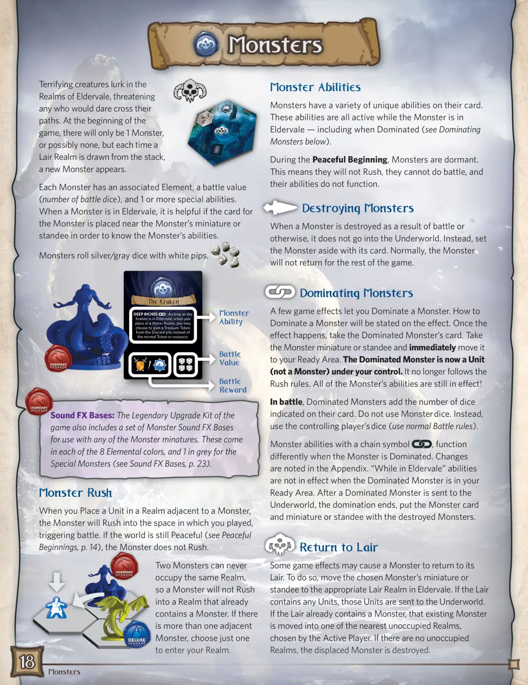
📝 第 18 页 AI 机翻对照（点击展开）
怪物
潜伏在艾尔达瓦尔领域的恐怖生物，威胁着任何敢于穿越他们路径的人。游戏开始时，只有1个怪物，或者可能没有，但每当从牌堆中抽取一个巢穴领域时，就会出现一个新怪物。
怪物能力
怪物在其卡牌上有各种独特的能力。当怪物在艾尔达瓦尔时——包括被支配时（见下文的支配怪物）——这些能力都会激活。
在和平初期，怪物处于休眠状态。这意味着它们不会冲锋，不能进行战斗，且它们的能力不会生效。每个怪物都有一个关联的元素、一个战斗数值（战斗骰的数量）和1个或多个特殊能力。
消灭怪物
当怪物被战斗或其他方式消灭时，它不会进入冥界。相反，将怪物及其卡牌放在一旁。通常情况下，怪物在游戏余下的时间内不会返回。
当怪物在艾尔达瓦尔时，如果将怪物的卡牌放在其模型或立牌旁边会有帮助，以便了解怪物的能力。
怪物冲锋
当你在与怪物相邻的领域放置一个单位时，怪物会冲锋到你 played 的空间，触发战斗。如果世界仍处于和平状态（见和平初期，第14页），怪物不会冲锋。
两个怪物永远不会同时存在于同一个领域。
支配怪物
少数游戏效果可以让你支配怪物。如何支配怪物会在效果中说明。一旦效果发生，拿取被支配怪物的卡牌。将怪物模型或立牌立即移动到你的准备区域。被支配的怪物现在是一个单位（不是怪物）并由你控制。它不再遵循冲锋规则。怪物的所有能力仍然有效！
在战斗中，被支配怪物会添加其卡牌上指示的骰子数量。不要使用怪物骰子。相反，使用控制玩家的骰子（使用常规战斗规则）。
带有锁链符号的怪物能力在被支配时功能不同。变化在附录中注明。"当在艾尔达瓦尔时"的能力在被支配怪物在你的准备区域时不会生效。
当被支配怪物被发送到冥界后，支配结束，将怪物卡牌和模型或立牌与被消灭的怪物放在一起。
返回巢穴
某些游戏效果可能导致怪物返回其巢穴。
占据同一领域，巢穴。为此，将所选怪物的模型或
所以怪物不会冲入一个已经 怪物立牌移至Eldervale中相应的巢穴领域。如果该巢穴 包含任何单位，这些单位会被送往冥界。
包含怪物。如果该巢穴 如果巢穴已经包含怪物，则现有的怪物
有多个相邻 怪物，只选择一个 被移至由当前玩家选择的最近的未占据领域 进入你的领域。如果没有未占据的
怪物，进入你的领域。 DELUXE
领域，被驱逐的怪物会被销毁。
怪物
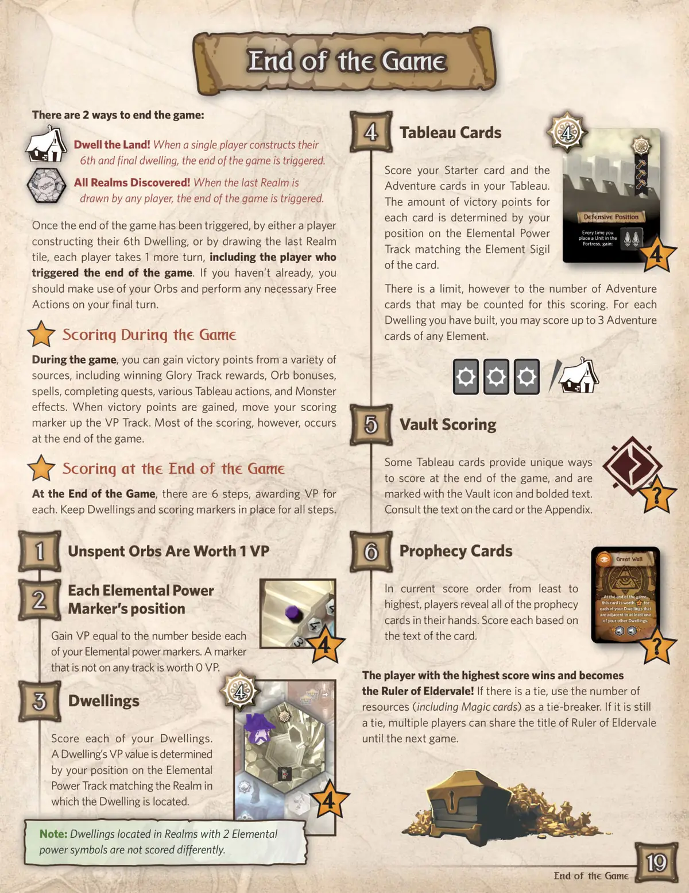
📝 第 19 页 AI 机翻对照（点击展开）
游戏结束
有2种方式可以结束游戏：
版图卡牌
定居于此！当单个玩家建造了他们的第6个也是最后一个住所时，游戏结束被触发。
所有领域均已发现！当最后一个领域被任何玩家抽走时，游戏结束被触发。
一旦游戏结束被触发，无论是通过玩家建造了第6个住所，还是抽走了最后一个领域，每个玩家再进行1个回合，包括触发游戏结束的玩家。如果你还没有这样做，你应该在你的最后一个回合中使用你的宝珠并执行任何必要的免费行动。
游戏中的计分
在游戏过程中，你可以从多种来源获得胜利点，包括赢得荣耀轨道奖励、宝珠加成、法术、完成任务、各种版图行动和怪物效果。当获得胜利点时，将你的计分标记在VP轨道上前进。然而，大多数计分发生在游戏结束时。
游戏结束时的计分
在游戏结束时，有6个步骤，每个步骤都会授予VP。在所有步骤中，保留住所和计分标记在原位。
未使用的宝珠价值1VP
每个元素力量标记的位置，对于每个相邻至少一个元素力量符号的住所，这张卡牌价值等于标记旁边的数值。
预言卡牌
按当前分数从低到高的顺序，玩家揭示他们手中的所有预言卡牌。根据卡牌上的文本为每张卡牌计分。
防御位置
每次你在要塞中放置一个单位时，获得：
根据卡牌上的元素符号，在相应的元素力量轨道上的位置确定每张卡牌的胜利点数。
然而，对于计入此计分的冒险卡牌数量有限。对于你建造的每个住所，你可以计分最多3张任何元素的冒险卡牌。
保险库计分
一些版图卡牌提供了在游戏结束时计分的独特方式，这些卡牌带有保险库图标和粗体文本。查阅卡牌上的文本或附录。
长城
每个元素力量标记的位置，对于每个相邻至少一个元素力量符号的住所，这张卡牌价值等于标记旁边的数值。
住所计分
为你的每个住所计分。住所的VP价值由你所在领域中的元素力量轨道上的位置决定。
注意：位于带有2个元素力量符号的领域中的住所不会以不同方式计分。
分数最高的玩家获胜，成为艾尔达瓦尔的统治者！如果有平局，使用资源（包括魔法卡）的数量作为决胜标准。如果仍然平局，多名玩家可以共享艾尔达尔统治者的称号，直到下一局游戏。
游戏结束
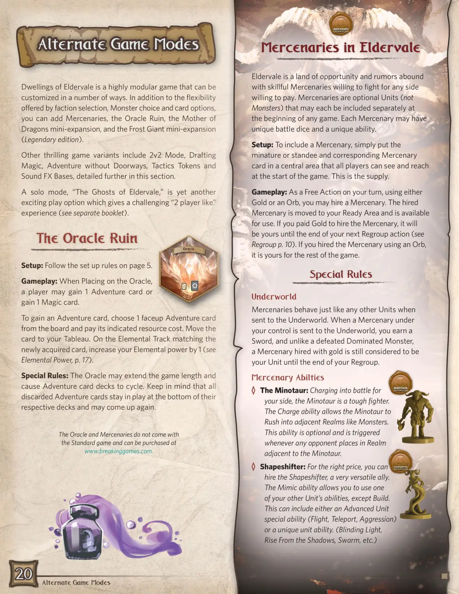
📝 第 20 页 AI 机翻对照（点击展开）
替代游戏模式
艾德尔瓦尔的雇佣兵
艾德尔瓦尔是一个充满机遇之地，各种传闻四起。《艾德尔瓦尔居所》是一款高度模块化的游戏，可以通过加入愿意为任何一方作战并收取报酬的熟练雇佣兵来进行定制。除了派系选择、怪物选择和卡牌选项提供的灵活性外，你还可以添加雇佣兵、神谕废墟、龙之母迷你扩展和霜巨人迷你扩展（传奇版）。
雇佣兵是可选的单位（不是怪物），每个都可以在任何游戏开始时单独包含。每个雇佣兵可能有独特的战斗骰子和独特的能力。
设置：要包含一名雇佣兵，只需在游戏开始时将相应的模型或立牌和雇佣兵卡牌放在一个所有玩家都能看到和触及的中央区域。这就是雇佣兵池。
游戏玩法：在你的回合，作为自由行动，使用金币或宝珠，你可以雇佣一名雇佣兵。被雇佣的雇佣兵被移至你的准备区并可供使用。如果你使用金币雇佣了雇佣兵，它将归你所有，直到你的下一个重组行动结束（见第10页重组）。如果你使用宝珠雇佣了雇佣兵，它将归你所有直到游戏结束。
神谕废墟
设置：遵循第5页的设置规则。
游戏玩法：当在神谕上放置时，玩家可以获得1张冒险卡或1张魔法卡。
要获得冒险卡，从版面上选择1张面朝上的冒险卡并支付其指示的资源成本。将卡牌移至你的桌面。在与新获得的卡牌相匹配的元素轨道上，将你的元素力量提高1点（见元素力量，第17页）。
特殊规则：神谕可能会延长游戏长度并导致冒险卡组循环。请记住所有被弃置的冒险卡都留在其牌组底部，可能会再次出现。
神谕和雇佣兵不随标准游戏提供，可以在www.breakinggames.com购买。
雇佣兵能力
牛头怪：为你的方阵冲锋而战，牛头怪是一名强悍的战士。
冲锋能力允许牛头怪像怪物一样冲入相邻的领域。这个能力是可选的，并在任何对手在牛头怪相邻的领域放置时触发。
变形者：只要价格合适，你就可以雇佣变形者，一个非常多才多艺的盟友。
模仿能力允许你使用你其他单位的一项能力，但不能建造
这可以包括一个高级单位的特殊能力（飞行、传送、侵略）
或一个独特的单位能力。（致盲之光、阴影崛起、蜂群等）
替代游戏模式
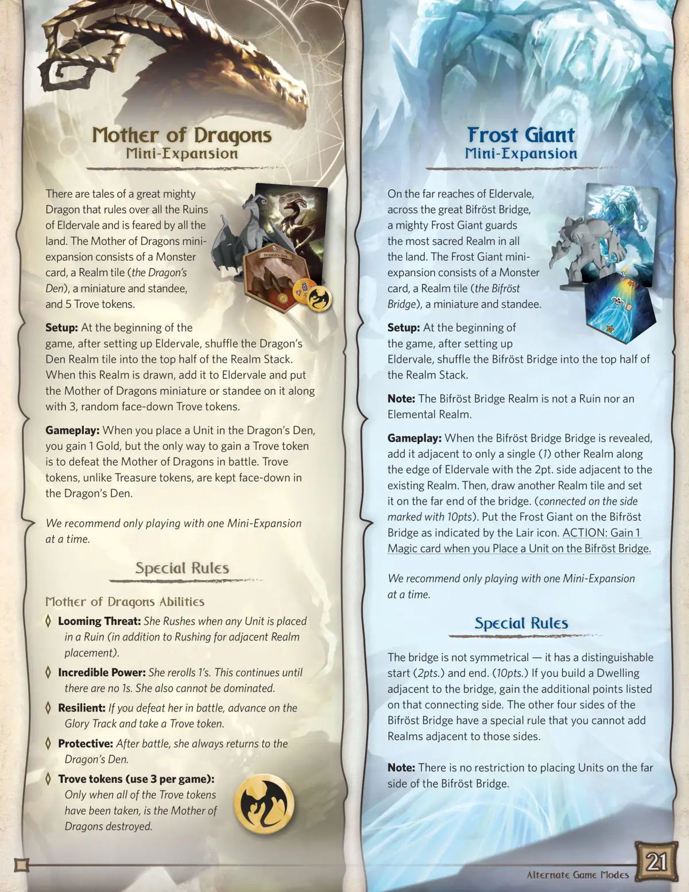
📝 第 21 页 AI 机翻对照（点击展开）
龙之母 冰霜巨人
迷你扩展 迷你扩展
有传说讲述一只强大无比的 在艾尔达瓦尔的遥远边缘
巨龙统治着所有遗迹，横跨巨大的彩虹桥
艾尔达瓦尔的遗迹，所有土地都畏惧它。龙之母迷你 一位强大的冰霜巨人守护着
扩展包含一张怪物卡牌，一张领域板块（龙之 土地上最神圣的领域。冰霜巨人迷你巢穴），一个迷你模型和底座， 扩展包含一张怪物卡牌，一张领域板块（彩虹
以及5个战利品指示物。 桥），一个迷你模型和底座。
设置：游戏开始时，在设置好艾尔达瓦尔后，将龙之 设置：游戏开始时，在设置好
巢穴领域板块洗入领域牌库的上半部分。 艾尔达瓦尔后，将彩虹桥洗入领域牌库的上半部分。
当这个领域被抽到时，将其添加到艾尔达瓦尔上，并将 注意：彩虹桥领域既不是遗迹也不是
龙之母的迷你模型或底座放在上面，同时放置3个 元素领域。
随机面朝下的战利品指示物。
游戏玩法：当你在龙之巢穴中放置一个单位时， 游戏玩法：当彩虹桥被揭示时，
你获得1金币，但获得战利品指示物的唯一方式 将其添加到艾尔达瓦尔边缘，仅与一个(1)个其他领域相邻，
是在战斗中击败龙之母。战利品指示物，与宝藏指示物不同， 彩虹桥的2分侧与现有领域相邻。然后，再抽一张领域板块
被面朝下地保存在龙之巢穴中。 并放在桥的远端（连接在标记10分的侧面）。按照兽穴图标将冰霜巨人放在彩虹桥上。行动：当你在彩虹桥上放置一个单位时，获得1张魔法牌。
我们建议一次只玩一个迷你扩展。 我们建议一次只玩一个迷你扩展。
特殊规则 特殊规则
龙之母能力 桥不是对称的——它有一个可区分的
（2分）起点和（10分）终点。如果你在桥旁建造一个住所，
获得连接侧列出的额外分数。彩虹桥的其他四个侧面有特殊规则，你不能在这些侧面添加相邻的领域。
威胁逼近：当在任何遗迹中放置单位时她会冲锋（除了因相邻领域放置而冲锋外）。
惊人力量：她会持续重掷1点，直到没有1点为止。她也不能被支配。
坚韧：如果你在战斗中击败她，前进荣耀轨道并拿取一个战利品指示物。
保护：战斗后，她总是返回龙之巢穴。
战利品指示物（每局游戏使用3个）：
只有当所有战利品指示物
都被拿取后，龙之母才会被消灭。
alternate game modes
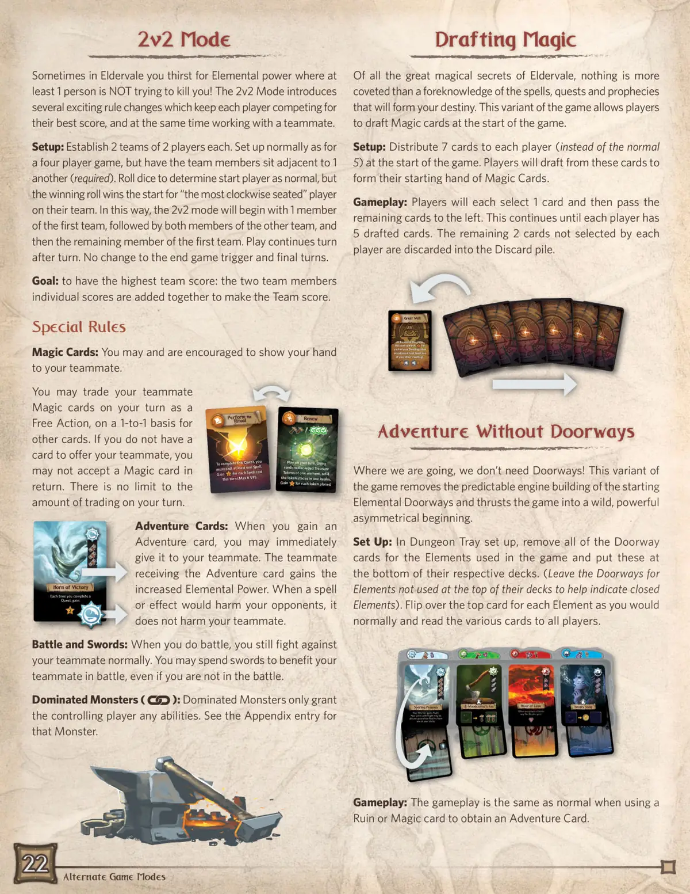
📝 第 22 页 AI 机翻对照（点击展开）
2v2模式 魔法牌 drafting
在埃尔德谷(Eldervale)，你有时会渴望元素力量，而至少有1个人不是在试图杀死你！2v2模式引入了几项令人兴奋的规则变更，这些变更让每位玩家既能竞争自己的最高分，同时又能与队友合作。
设置：建立2个2人团队。按照4人游戏的正常方式设置，但要求队友彼此相邻（必需）。像往常一样掷骰子决定起始玩家，但获胜的一方将为"顺时针方向就座的玩家"赢得起始权。这样，2v2模式将以第一队的1名成员开始，接着是另一队的两名成员，然后是第一队的剩余成员。游戏继续进行，轮流进行。游戏结束触发条件和最终回合没有变化。
目标：获得最高的团队分数：两位团队成员的个人分数相加即为团队分数。
特殊规则
魔法牌：你可以并且被鼓励向你的队友展示你的手牌。
你可以在你的回合与队友以1:1的比例交换魔法牌，作为免费行动。如果你没有可以提供给队友的牌，你在这个回合就不能接受魔法牌作为交换。在你的回合内，交换次数没有限制。
冒险牌：当你获得一张冒险牌时，你可以立即将其交给你的队友。接收冒险牌的队友会获得增加的元素力量。当一个法术或效果会伤害你的对手时，它不会伤害你的队友。
战斗与剑：当你进行战斗时，你仍然正常地与你的队友战斗。你可以花费剑来使你的队友受益。
战斗中的队友，即使你不在战斗中。
被支配的怪物(CD)：被支配的怪物只授予控制玩家任何能力。参见该怪物的附录条目。
游戏玩法：使用废墟或魔法卡获取冒险卡时，游戏玩法与正常情况相同。
alternate game modes
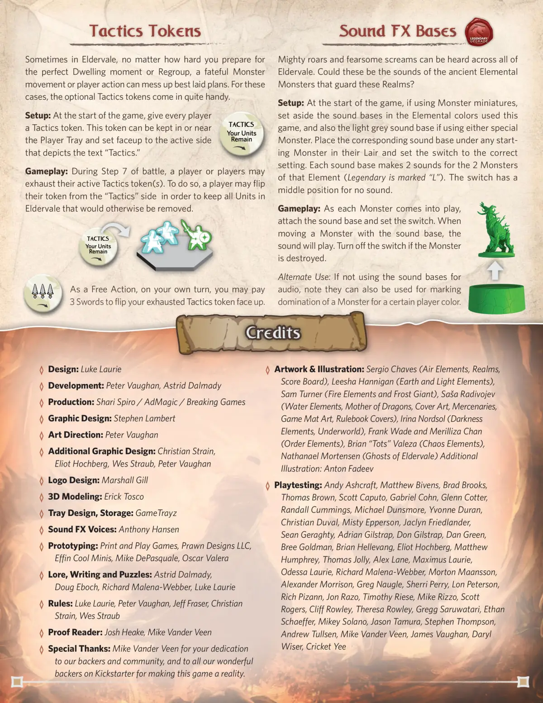
📝 第 23 页 AI 机翻对照（点击展开）
战术指示物 音效底座
在艾尔达谷，有时无论你为完美的住所时刻或重组阶段做多么充分的准备，一次致命的怪物移动或玩家行动都可能打乱最佳计划。在这些情况下，可选的战术指示物就派上了用场。
设置：游戏开始时，如果使用怪物模型，将音效底座放在本游戏中使用的元素颜色中，以及如果使用任何特殊怪物时，也放置浅灰色音效底座。将相应的音效底座放在任何怪物的巢穴下方，并将开关设置到正确位置。每个音效底座为该元素的两种怪物（传奇怪物标记为"L"）发出两种声音。开关中间位置为无声音。
游戏玩法：在战斗的第7步，一个或多个玩家可以消耗他们的主动战术指示物。为此，玩家可以将他们的指示物从"战术"面翻转过来，以保留所有原本会被移除的艾尔达谷单位。
你的单位 保留
作为自由行动，在你的回合，你可以支付3把剑来翻转你已消耗的战术指示物使其面朝上。
替代用途：如果不将音效底座用于音频，请注意它们也可以用于标记某个玩家颜色对怪物的支配权。
致谢
设计：Luke Laurie 美术与插画：Sergio Chaves（元素、领域、记分板），Leesha Hannigan（土元素与光元素），Sam Turner（火元素与冰霜巨人），Sasa Radivojev（水元素、龙之母、佣兵、版图艺术、规则书封面），Irina Nordsol（黑暗元素、地下世界），Frank Wade和Merilliza Chan（秩序元素），Brian"Tots"Valeza（混沌元素），Nathanael Mortensen（艾尔达谷之魂）额外插画：Anton Fadeev
开发：Peter Vaughan，Astrid Dalmady
制作：Shari Spiro/AdMagic/BreakingGames
平面设计：Stephen Lambert
版图艺术：Peter Vaughan
艺术指导：Peter Vaughan
额外平面设计：Christian Strain，Eliot Hochberg，Wes Straub，Peter Vaughan
标志设计：Marshall Gill
3D建模：Erick Tosco
托盘设计，收纳：GameTrayz
音效与配音：Anthony Hansen
游戏测试：Andy Ashcraft，Matthew Bivens，Brad Brooks，Thomas Brown，Scott Caputo，Gabriel Cohn，Glenn Cotter，Randall Cummings，Michael Dunsmore，Yvonne Duran，Christian Duval，Misty Epperson，Jaclyn Friedlander，Sean Geraghty，Adrian Gilstrap，Don Gilstrap，Dan Green，
原型设计与制作：打印即玩游戏，Prawn Designs LLC
设计师
Bree Goldman, Brian Hellevang, Eliot Hochberg, Matthew Effin Cool Minis, Mike DePasquale, Oscar Valer Humphrey, Thomas Jolly, Alex Lane, Maximus Laurie
故事、写作与谜题设计
Astrid Dalmady, Odessa Laurie, Richard Malena-Webber, Morton Maansson, Doug Eboch, Richard Malena-Webber, Luke Laurie, Alexander Morrison, Greg Naugle, Sherri Perry, Lon Peterson, Rich Pizann, Jon Razo, Timothy Riese, Mike Rizzo, Scott
规则编写
Luke Laurie, Peter Vaughan, Jeff Fraser, Christian Rogers, Cliff Rowley, Theresa Rowley, Gregg Saruwatari, Ethan Strain, Wes Straub Schaeffer, Mikey Solano, Jason Tamura, Stphen Thompson
校对
Josh Heake, Mike VanderVeen, Andrew Tullsen, Mike VanderVeen, James Vaughan, Dary Wiser, Cricket Yee
特别感谢
感谢我们的支持者和社区，特别感谢 Kickstarter 上所有出色的支持者们，是你们让这款游戏成为现实。Mike VanderVeen，感谢你的奉献。
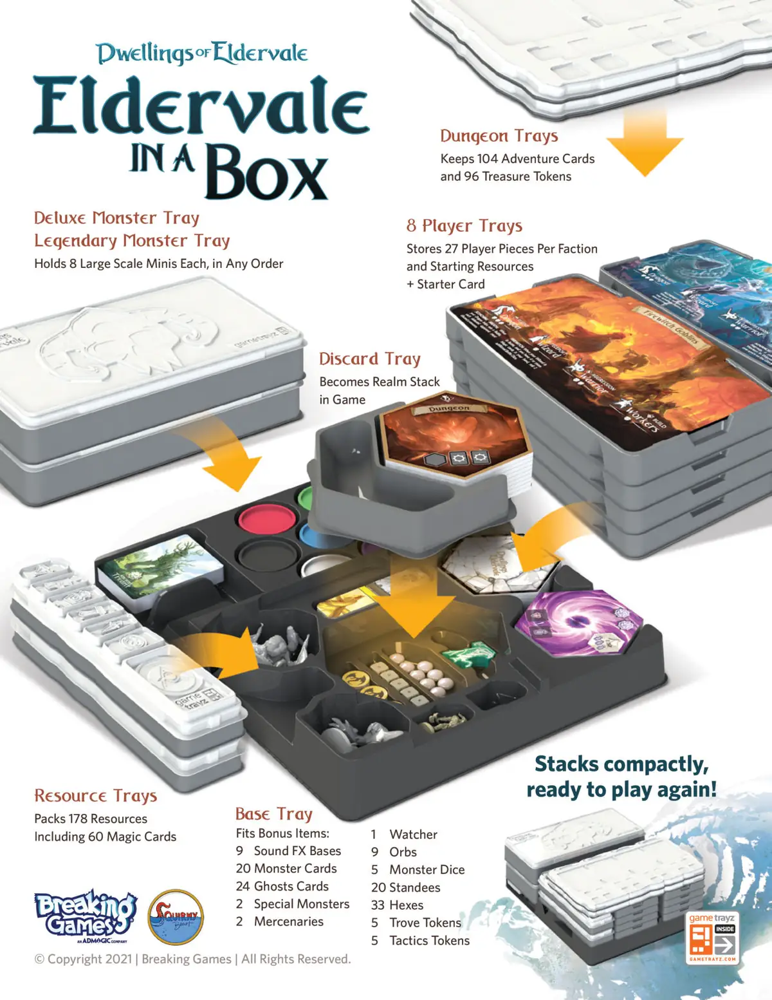
📝 第 24 页 AI 机翻对照（点击展开）
DwellingsorEldervale
Fidervale
Dungeon Trays
INA Box
Keeps104AdventureCards
and96TreasureTokens
DeluxeMonsterTray
8PlayerTrays
LegendaryMonsterTray
Stores27PlayerPiecesPerFaction
Holds8LargeScaleMinisEach,inAnyOrder andStartingResources
+StarterCard
Discard Tray
BecomesRealmStack
inGame
Dung
Stacks compactly,
ready to play again! Resource Trays
Base Tray Packs178Resources
FitsBonusItems: 1 Watcher Including6oMagicCards
9SoundFXBases 6 Orbs
20MonsterCards 5MonsterDice
24GhostsCards 20 Standees
Breaking 2Special Monsters
33Hexes
QUIRNY GaMess 2Mercenaries TroveTokens gametrayz
内部
AADMOGICPAN 5 TacticsTokens
Copyright2021|BreakingGames|All RightsReserved.